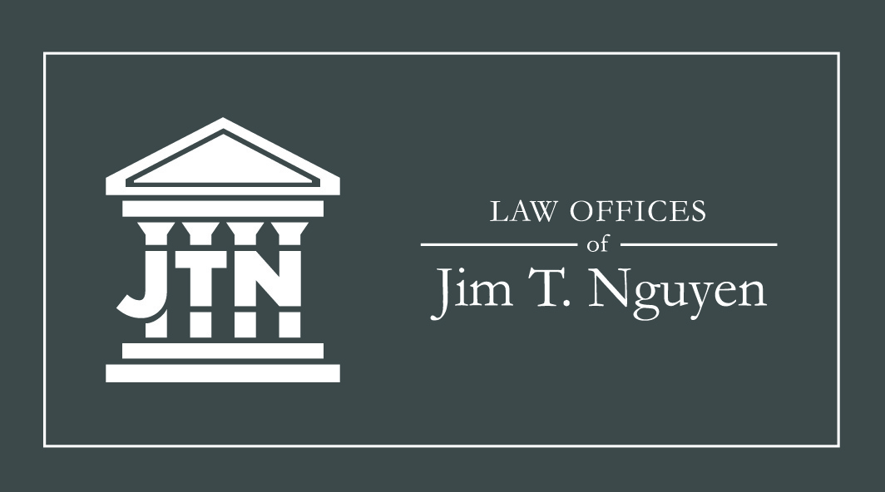
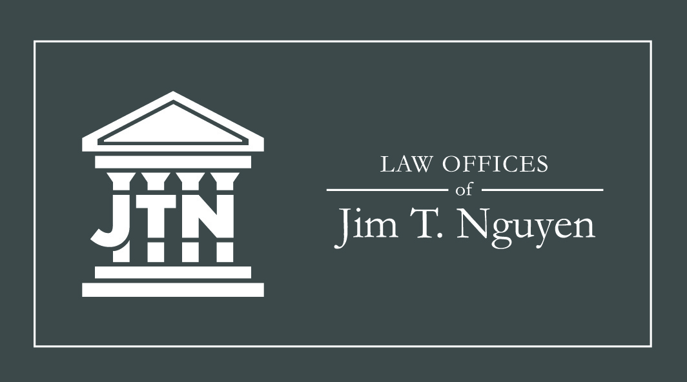

Jim T. Nguyen Law
Featured on The Best Legal Logo Designs by DesignRush.
Jimmy wanted a logo and business cards for his new business. His only guidelines were that the logo had to incorporate pillars of a courthouse, and his business card had to incorporate the justice scale.
Logo
First we finalized a logo. He was happy with the first ideation of the logo, and after playing around with using his preferred color of "navy blue", we settled on keeping the entire logo dark gray.
Business Cards
After finalizing the logo, we worked on the business cards. Originally, he wanted them in an vertical orientation. He knew he didn't want a white background because he wanted it to look "heavy".
Since he opted for a colored background, we switched the logo color to white for a cleaner look and reserved the dark gray color for when it's printed on paper such as legal letters.


After a few different iterations, we decided to change the orientation to horizontal, so it wouldn't be as cramped.
 

Website
A year later, I was hired on again to redesign his website. He wanted to update a few sections, and for it to look more professional.
The previous designer developed the website to be more or less one page, which involved a lot of endless scrolling. There were also a few redundant aspects, such as repeating information, which caused the website to feel very cluttered.

Since I was the one who designed his logo and business cards, I already had a working style guide and iterated the website to further develop the brand.
In order to create a more enjoyable and well thought-out user experience, the following had to be met:
Get rid of endless scrolling. Original home page should be broken up into separate areas of importance and links to its own page.
Photos should be aesthetically pleasing, high-quality, and related to the business.
Get rid of repeating information and add negative space for better flow.
Make sure contact page was easily accessible, no matter what page the user was at.
I started designing prototypes on Figma, and sent them over for approval. After a few tweaks here and there, the design was approved to be developed.